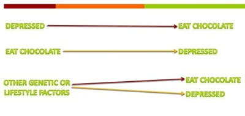

Signs, signs, signs
Cholesterol in my avocado?
 Signs and product labels make a lot of claims as they compete for our attention and our dollars. Even when they are not deliberately trying to mislead us, they are often confusing. For instance, is this sign (from a local grocery store) claiming that avocados have less cholesterol than bananas? Do fruits and vegetables even have cholesterol?
Signs and product labels make a lot of claims as they compete for our attention and our dollars. Even when they are not deliberately trying to mislead us, they are often confusing. For instance, is this sign (from a local grocery store) claiming that avocados have less cholesterol than bananas? Do fruits and vegetables even have cholesterol?
Most textbooks say that animal cells have cholesterol, while plants contain other types of sterols but not cholesterol. This is not strictly true, because new sensitive analytical methods are able to detect small amounts of cholesterol in plants. Nevertheless, the levels are miniscule compared to the amount of cholesterol found in many animal foods, so small that food labels are allowed to list it as zero. So unless someone is putting mayonnaise (with eggs) in your guacamole, no need to worry that cholesterol is hiding in your avocado, or your banana for that matter.
Wait, did someone say banana split? With whipped cream?
Interestingly, as science has progressed, the 2015-2020
Dietary Guidelines for Americans have less stringent recommendations for intake of cholesterol, but more stringent recommendations for intake of added sugar.
Dueling Headlines
Food and mood.
Depressed? You Must Like Chocolate.
Eating Chocolate is Linked to Depression.
Seeking Solace in Nibbling Chocolate Didn't Ease Depression.
Depressed People Eat More Chocolate.
Study: People Who Ate More Chocolate More Likely to Be Depressed.
These are just a few of the many headlines about depression and chocolate that simultaneously appeared in different publications. All were based on the same scientific study. Yet, some headlines suggested, or seemed to suggest, that people ate more chocolate because they were depressed. Other headlines suggested that eating chocolate made people depressed. So what is going on? In fact, many of the headlines took liberty with the original findings. The study was simply a survey. It documented that people who scored high on a depression measure also reported eating more chocolate than people who scored low on the depression measure. The direction of the link was not proven. Any of the connections shown in the figure could explain the relationship the researchers reported. Maybe being depressed causes people to eat more chocolate. Maybe eating chocolate causes people to become depressed. On the other hand, maybe chocolate eating and depression only appear to be causally linked because a third (unknown) factor causes both. These kinds of studies raise interesting questions, but it is risky to jump to conclusions about cause from a study that merely suggests a correlation.
Another case study about correlation versus causation.
Cool Microfauna
Real or Fake?
Is this image real or AI-generated?
This is an image of a tiny animal known as a tardigrade. The image is AI-generated but the animal is real. The AI did a pretty good job of rendering the creature, though some of the AI renderings gave it cute bug eyes, which is not real.
Tardigrades are also called water bears and moss piglets.